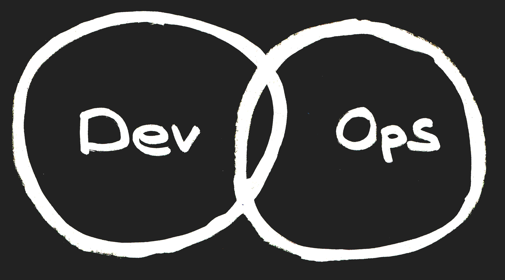
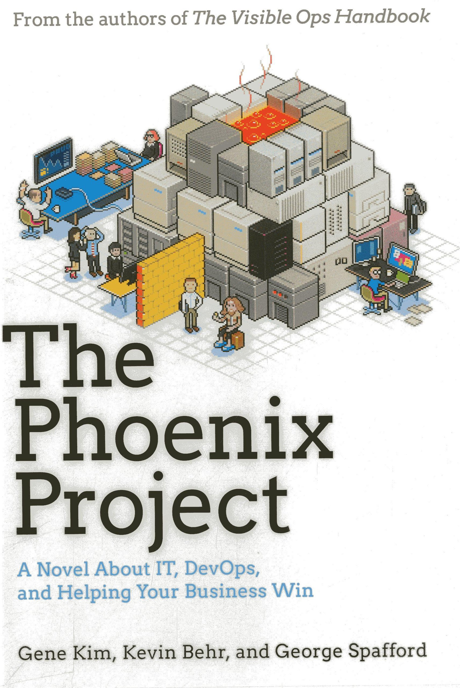

DevOps Story
December 21st, 2017
By Didier BERNAUDEAU @ 42 (School)
Cash Registers Unlimited Company
Société internationale créée en 1973
Fabriquant et revendeur de caisse enregistreuse
Editeur de logiciel comptable
Désormais, la situation est grave
- Perte de part de marché depuis 2013
- Difficulté face aux nouveaux concurrents
- Echec du projet "SAAS" débuté en 2015
Votre mission :
Mettre en oeuvre le "Cash Register 2.0"
Si vous échouez:
le développement et la production informatique seront sous-traités !
Vous reportez directement au CEO
(Le CIO ne fait plus partie des effectifs depuis hier)
Vous serez accompagné d'un consultant, aux pratiques bien étranges,
venant d'un cabinet de conseil renommé (mandaté par le conseil d'administration)
Planning
Mai 2018*: première démonstration au conseil d'administration
Juin 2018*: Commercialisation de l'offre
* ce n'est pas précisé, mais c'est début ;)
Question #1
Qu’est-ce que DevOps ?
- A/ Une alternative à ITIL (IT Infrastructure Library)
- B/ Des principes de management
- C/ Le déploiement continu
- D/ Une alternative aux méthodes agiles
Three Ways
1 - System Thinking

Three Ways
2 - Feedback loop

Three Ways
3 - Culture of continual Experimentation and Learning

Question #2
Comment mettre en place le System Thinking ?
- A/ Scrum
- B/ La RACHE
- C/ Kanban
- D/ Waterfall
Kanban board

WIP (Work In Progress)
Kanban board

WIP Limit: Theory Of Constraints
Question #3
Comment décrire les actions à réaliser ?
- A/ User Stories
- B/ Cahier des charges
- C/ Expression des besoins
- D/ Ticket
User Stories
- User Story:
En tant que commerçant, je peux ajouter un article dans mon catalogue. - Security User Stories:
En tant que commerçant, je peux habiliter mes vendeurs. - Abuser Story (Evil Story):
En tant que pirate, je peux modifier le prix d'un article.
User Stories
- Backlog
- Epic Story
- DOD (Definition of Done)
- Acceptance criteria
Backlog for Cash Register 2.0
Caisse Enregistreuse
- Application Android
- Créer des factures et des devis
- Encaissement Espèces, Chèque et Carte bancaire
- Facilité de paiement (3 fois sans frais, ...)
- Gestion des retours client
- ...
Catalogue
- Gestion des articles et des prestations
- Gestion des stocks
- Définition du taux de TVA et du taux de marge
- Ajout de photos des articles
- Gestion des promotions
- ...
Référentiel Client
- Gestion des clients
- Relation entre les personnes (Enfant, Parent, ...)
- Information de parrainage client
- ...
Fidélité
- Système à point (10€ = 1 point)
- Système par article (10 articles = 1 article offerts)
- ...
Comptabilité
- Gestion des impayés
- Calcul TVA collectée
- Accès compte bancaire (Open Banking)
- ...
MVP (Minimum Viable Product)
Caisse Enregistreuse
Catalogue
Référentiel Client
MVS (Minimum Viable Security)
Question #4
Quelle organisation adopter ?
- A/ Collaboration rapprochée Dev et Ops
- B/ Fusion Dev et Ops en une seule équipe
- C/ Créer une 3ème équipe entre les Dev et les Ops
- D/ Peu importe
DevOps Team
Cross functional team
Close-knit collaboration
DevOps Team


Les experts
Software architect, technical architect, functional architect, Security, ...Equipe transverse à l'organisation DevOps:
- ExaaS (Expert-as-a-Service)
- CaaS (Consulting-as-a-Service)
"Good enough expertise"
Question #5
Quelle est le nombre maximum de personnes dans une telle équipe ?
- A/ 6
- B/ 10
- C/ 15
- D/ 25
Cross functional team
- Small team (Two-pizza team)
- Self-organizing
- Self-managing
Question #6
Quelle est la finalité d'une équipe DevOps ?
- A/ Projet
- B/ Produit
- C/ Fonctionnalité
Product or Feature Team
Changement d'organisation majeur:
- Abandon du système de gestion de projet traditionnel (budget, comité, ...)
- Prise en compte de la culture DevOps dans les objectifs des collaborateurs
Organisation des équipes

Coordination au niveau programme
with Program Increment
Scrum
Cycle de développement itératif

SAFE (Scaled Agile Framework)
Question #7
Quelle architecture adopter dans une organisation DevOps ?
- A/ MVC
- B/ Microservice
- C/ Monolithique
- D/ Architecture orientée service
Les microservices
- Attention au anti-pattern (Syndrome du plat de spaghettis)
- Orchestrateur (exemple: Conductor)
- Authentification
- OAuth 2.0
- JWT (Json Web Token)
Cloud Native App: The Twelve-Factor App
Question #8
Quel framework utiliser ?
- A/ Le framework que je connais
- B/ Le framework que l'équipe connait
- C/ Le framework utilisé au sein de la société
- D/ Le tous dernier framework
Framework utilisé au sein de la société
Il sera maitrisé par tous :
- Par la production: compatible avec l'infrastructure existante
- Par la sécurité: conseil et guide de développement sécurisé
- Par les RH: formation et conduite du changement (Skills Matrix)
No Cowboy Coding !
Toolchain

Toolchain

Security tools
- Linter (ESlint Security)
- Source code audit (Sonar Security Rules)
- Security Mock (Mockito & Spring Security)
- Secure TDD & BDD (BDD-Security with Cucumber.js)
A9-Using Components with Known Vulnerabilities
- Back End: Dependency check
- Front End: RetireJS
Question #9
Dans quel environnement déployer vos produits ?
- A/ IaaS
- B/ IaaS + Container
- C/ PaaS
- D/ SaaS
PaaS
- Open Shift (by Red Hat)
- Clound Foundry (by Pivotal)
- Bluemix (By IBM)
- LaaS (Load Balancer as a Service)
- FaaS (Firewall as a Service)
Fonctionnalités assurées par Neutron pour OpenStack
Question #10
Quelle stratégie de déploiement en production adopter ?
- A/ Mettre à jour l'environnement l'existant
- B/ Installer un nouvel environnement
Stratégie de déploiement

Création d'un nouvel environnement à chaque déploiement:
"Blue/green" ou Canary release
Impossible de stocker des données: base de données, secret, ...
Question #11
Comment stocker les secrets ?
- A/ Sauvegarder le secret dans le container
- D/ Utiliser une base de données Clé/Valeur
- B/ Passer le secret en variable d'environnement
- C/ Passer le secret par un Volume
Key/Value Store
- Vault from HashiCorp
- Barbican from RedHat
Bilan de la situation
- Organisation en place (3 équipes avec Kanban et Backlog)
- Architecture applicative formalisée: Microservice
- Framework de développement défini
- Toolchain CI/CD mise en oeuvre
- PaaS installée et prête à recevoir vos applications
Vous avez maintenant les clés pour mener à bien un projet DevOps!
Pour plus d'information
Book

Agile Application Security
Enabling Security in a Continuous Delivery Pipeline
Securing DevOps
Safe services in the CloudAny Question ?
View online at https://git.io/vbDTP